FlowStore
3.1 ¿Qué es FlowStore?
FlowStore es el software con el que la empresa atiende al cliente y cobra sin perder el hilo de lo vendido: catálogo y precios coherentes, disponibilidad visible desde el mostrador y registro ordenado de cada operación. En la práctica comercial, el valor central es que la venta deja de ser un evento aislado y se convierte en el punto de partida de un mismo circuito —ticket o documento, inventario actualizado, cobros y, cuando corresponde, información lista para administración, tesorería y cumplimiento tributario— sin depender de cuadraturas manuales paralelas. FlowStore acerca esa experiencia con una app POS pensada para caja (rapidez y claridad al cobrar) y un panel de administración donde se definen productos, listas de precios, puntos de venta y políticas que el equipo comercial y operativo respeta en el día a día.
3.2 Arquitectura del producto
FlowStore ayuda a gestionar el negocio de punta a punta: inventario, compras y ventas, el dinero que entra y sale en caja y bancos y, cuando aplica, la contabilidad ligada a esas operaciones, además del cobro en el local. La solución consta de dos aplicaciones web que trabajan con la misma información de fondo; desde el navegador se pueden instalar como aplicación (acceso desde el escritorio o la pantalla de inicio del celular o tablet). Ambas pueden usarse en computador, en tablet y en teléfono móvil. El panel de administración concentra la configuración, la supervisión y los informes; el punto de venta (POS) está pensado para el día a día de vender y cobrar en caja.
Operación / caja
│
▼
┌───────────────────────┐ ┌────────────────────────┐
│ FlowStore — POS │───────► │ Información central │
│ (venta, carrito, │ │ compartida │
│ cobro, caja) │ └───────────▲────────────┘
└───────────┬───────────┘ │
│ │
│ │ consultas y
│ │ actualizaciones
▼ │
┌───────────────────────┐ │
│ FlowStore — Admin │─────────────────────┘
│ (configuración, │
│ informes, gestión │
│ interna) │
└───────────────────────┘
Qué aporta FlowStore (resumen)
- Un solo registro operativo: lo que se vende o compra y lo que pasa por caja o banco queda trazado en el mismo sistema, reduciendo duplicación de planillas o reconciliaciones manuales extensas.
- Separación clara de roles: cajeros pueden trabajar desde el POS enfocados en velocidad de cobro, mientras que administración y contabilidad usan el panel con más detalle.
- Extensión modular: compras con DTE de proveedor, inventario multicentro, tesorería, plan contable, remuneraciones u otros bloques están disponibles según la configuración implementada en cada proyecto.
- Acceso desde navegador: las aplicaciones pueden instalarse como acceso directo en equipo de caja u oficina; los detalles de despliegue e infraestructura se cubren en secciones posteriores de este informe.
3.3 FlowStore — Panel de administración
El panel es la aplicación para la administración y la gestión interna: permite mantener al día productos, clientes y proveedores; revisar ventas y compras; llevar tesorería y contabilidad; y ajustar cómo está configurada la empresa y quién tiene acceso. La navegación es un menú lateral; arriba se ve la marca, el usuario que inició sesión y acciones habituales como el cambio de contraseña.
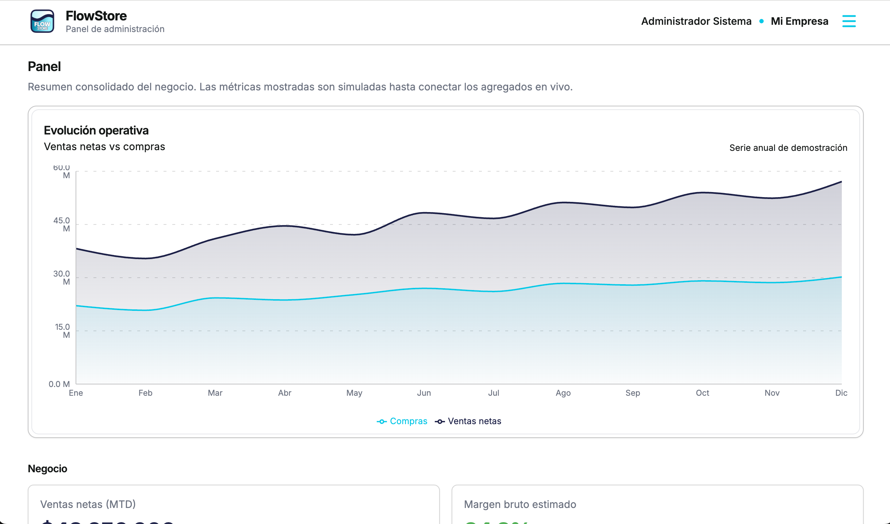
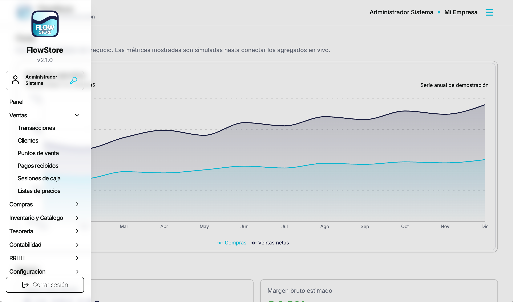
3.3.1 Panel
El panel de inicio es la primera impresión de FlowStore para quien administra el negocio: concentra indicadores y gráficas que permiten ver de un vistazo cómo va la operación, sin tener que abrir aún cada módulo. Eso traduce en menos tiempo buscando información, una lectura más ordenada del negocio y atajos hacia las áreas que suelen requerir seguimiento. Tras iniciar sesión, la persona llega a un espacio pensado para orientarse rápidamente y, desde ahí, desplazarse al detalle —Ventas, Compras, inventario u otros bloques— con el menú lateral, manteniendo la sensación de un sistema integrado y fácil de recorrer.
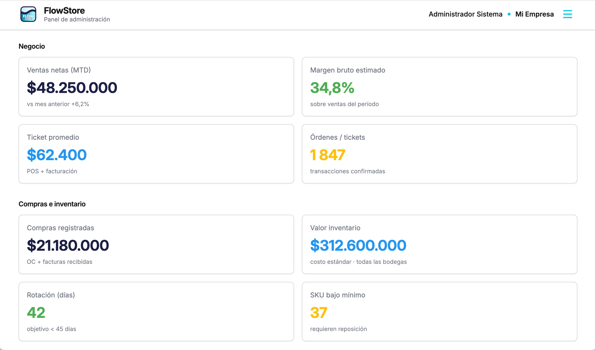
3.3.2 Ventas
El módulo Ventas es el área del panel donde FlowStore concentra lo necesario para sustentar la operación comercial: mantención de clientes, definición de puntos de venta y listas de precios, seguimiento de los pagos recibidos, consulta del detalle de ventas y revisión de las sesiones de caja asociadas al punto de venta. En conjunto ofrece una mirada de administración y control alineada con lo que ocurre en el mostrador.
Transacciones
Sirve para revisar y dar seguimiento al detalle de las ventas y otros movimientos que se registran desde el punto de venta: consultas, trazabilidad y auditoría del día a día comercial.
Clientes
Es el lugar donde se crea y mantiene la base de clientes: datos de contacto y facturación, y las condiciones comerciales definidas por la empresa. La vista de detalle del cliente reúne su información en un solo lugar y permite revisar el historial de compras con trazabilidad. Cuando la política del negocio autoriza crédito interno como medio de pago, aquí también se visualiza el saldo, se configura el límite o cupo de crédito y se consultan los pagos realizados por el cliente.
Puntos de venta
Permite definir el punto físico donde opera la app POS. En FlowStore, un punto de venta representa la caja o el espacio de atención donde se realiza la transacción; por eso queda asociado a una sucursal y define el contexto de venta (qué precios aplican y con qué políticas se opera). Cada punto de venta puede trabajar con una o varias listas de precios, lo que permite habilitar listas distintas según la caja: por ejemplo, dos cajas en la misma sala, una orientada a venta al por menor y otra a venta al por mayor, sin mezclar condiciones ni obligar al cajero a “adivinar” qué precio corresponde.
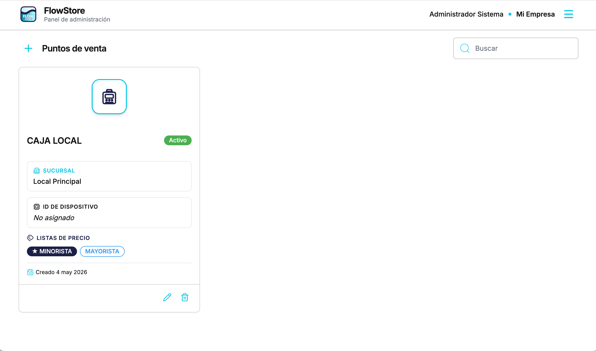
Pagos recibidos
Aquí puede ver todos los cobros que ya ingresaron: en una misma vista queda claro quién pagó (cliente), con qué medio lo hizo (por ejemplo efectivo, tarjeta o transferencia), en qué local o caja se registró el cobro y a qué venta corresponde. Sirve para revisar el dinero cobrado sin tener que reconstruir lo que pasó solo desde la caja del día: ordena la información para consultas, cuadraturas y seguimiento de ventas a crédito o cuotas cuando el negocio trabaja así.
Sesiones de caja
En FlowStore, una sesión de caja representa el ciclo de trabajo de la caja del punto de venta: lo que en la práctica sería abrir la caja registradora al iniciar el turno, registrar lo que entra y sale de efectivo durante ese período y cerrar al terminar. Aquí queda el historial de esas sesiones ligadas al POS —apertura con el dinero inicial, movimientos intermedios (por ejemplo retiros o ingresos de efectivo que se anotan en la sesión además de los cobros por ventas) y el cierre— para poder revisar y cuadrar lo registrado en el sistema con lo operado en el local.
Listas de precios
Desde administración se pueden crear varias listas de precios y mantener en cada una el valor de venta de los productos. Esas listas se utilizan luego para aplicar precios diferenciados según la política del negocio: por ejemplo una lista estándar para el público general, otra para clientes con condición preferente, otra para venta al por mayor, u otras combinaciones que la empresa defina. La ventaja es ordenar la política comercial en un solo lugar.
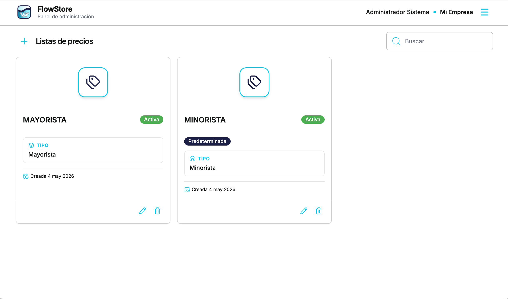
3.3.3 Compras
El módulo Compras es el área del panel donde FlowStore organiza lo que entra al negocio desde los proveedores: el registro de mercadería recibida, la información de proveedores, las órdenes de compra cuando la operación las utiliza, los documentos tributarios electrónicos emitidos por el proveedor y las devoluciones cuando corresponda devolver productos o ajustar compras.
Recepciones
Aquí se registra la llegada física de mercadería y su vínculo con la compra o el documento que respalda el ingreso. Permite que el stock refleje lo que realmente entró a bodega o local, con orden y respaldo para revisar diferencias entre lo pedido, lo facturado y lo recibido.
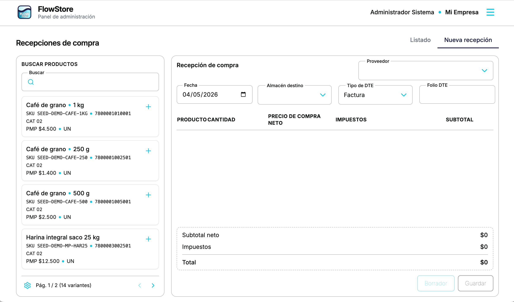
Proveedores
En esta pantalla se registran y mantienen los proveedores con sus datos de trabajo habituales: nombre o razón social, datos de contacto, identificación tributaria y el resto de campos que compras y documentación necesitan. Esa información queda centralizada: cada operación la reutiliza sin tener que volver a cargarla, lo que reduce errores y tiempo administrativo. El detalle del proveedor concentra en un mismo lugar la ficha completa y la lectura operativa asociada —compras, documentos y pagos vinculados a ese proveedor— para revisar el historial y las obligaciones con claridad.
Órdenes de compra
Cuando el negocio compra con anticipación, sirve para dejar constancia del pedido antes del ingreso de mercadería o de la facturación: útil para seguimiento interno, acuerdos con proveedor y coherencia con las recepciones y documentos posteriores.
DTE’s proveedor
Este apartado reúne los documentos tributarios electrónicos que forman parte de las compras: los emitidos por proveedor y los que la empresa registra en su circuito operativo —entre otros, facturas de compra, boletas, boletas de honorarios, guías de despacho y notas de crédito, según los tipos de documento habituales en Chile ante el SII. FlowStore los clasifica por tipo de documento, mediante pestañas o vistas separadas en el mismo módulo. Así compras y contabilidad comparten una misma base ordenada y localizan cada comprobante con claridad, sin mezclar tipologías.
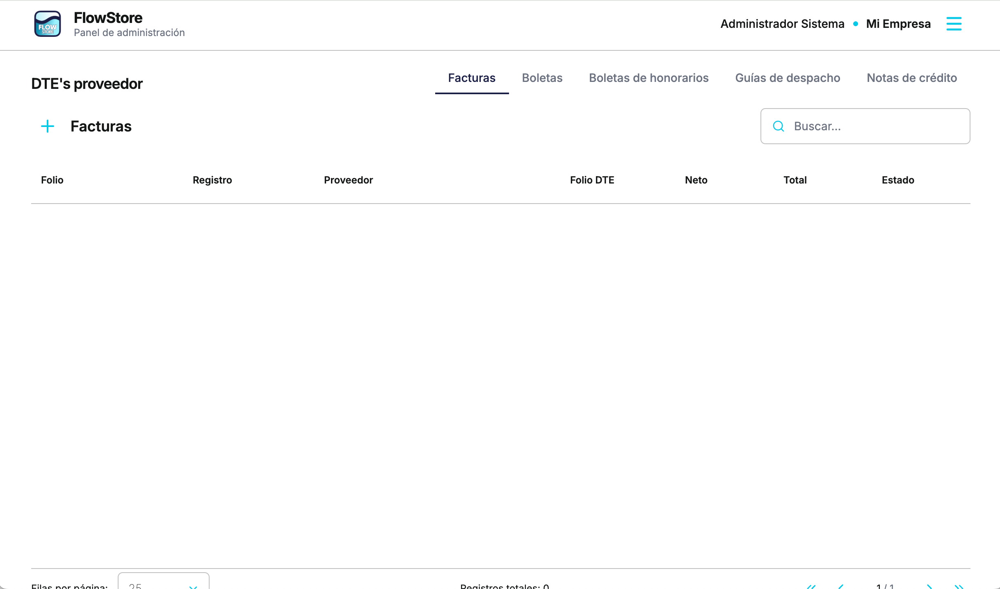
Devoluciones proveedor
Cubre la gestión de devoluciones de mercadería o ajustes asociados al proveedor cuando la operación lo requiere (productos defectuosos, sobrestock acordado, diferencias con documentos, etc.), manteniendo coherencia entre stock, compras y documentación.
3.3.4 Inventario y catálogo
El módulo Inventario y catálogo es el área del panel donde FlowStore concentra las definiciones que alimentan compras, punto de venta e informes: los productos y sus variantes, la organización por categorías, las cantidades en existencias, las unidades de medida, los atributos que permiten armar variantes sin duplicar fichas y los almacenes donde reside el stock.
Productos
Aquí se crean y mantienen los ítems vendibles o comprables: nombre comercial, datos tributarios cuando aplican, categorías, precios de lista y la configuración de variantes. Los atributos son dimensiones reutilizables que describen en qué puede diferir un mismo concepto de producto —por ejemplo color y talla— y se administran en su propia pantalla para no repetir las mismas opciones en cada ficha. Las variantes son las combinaciones concretas que el negocio vende o compra: cada una puede tener precio propio, existencias por almacén, código SKU interno y código de barras para uso en mostrador. El SKU ofrece una clave estable para inventario, reportes y cuadraturas sin depender del nombre visible al cliente; el código de barras agiliza la búsqueda en el POS al escanear y reduce errores frente a digitación manual de descripciones largas o SKUs. FlowStore calcula de forma coherente montos netos, impuestos y totales según las tasas y reglas definidas en el negocio, de modo que lo configurado en catálogo se refleja de manera consistente en ventas y en los documentos que las respaldan.
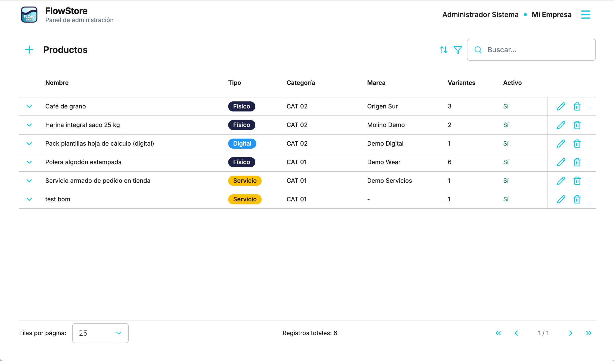
Categorías
Agrupa productos en una jerarquía padre–hijo: cualquier categoría puede tener varias categorías hijas, sin definir un tipo aparte de subcategoría; así el catálogo se organiza como árbol flexible para navegar el inventario en administración y ordenar surtidos amplios con mayor claridad.
Existencias (Stock)
Permite revisar saldos por variante y por almacén —totales y cantidad disponible— y abrir el detalle por ubicación cuando el negocio trabaja con más de una bodega o local. El modelo de stock es transaccional: las ventas en el POS y el ingreso de mercadería por compras (recepciones), entre otros movimientos que el sistema registre, actualizan las existencias de forma automática, sin recargar cantidades manualmente por cada operación cotidiana. Para situaciones excepcionales ofrece además transferencia entre almacenes y ajuste directo del stock, útil tras inventarios físicos, mermas o correcciones puntuales.
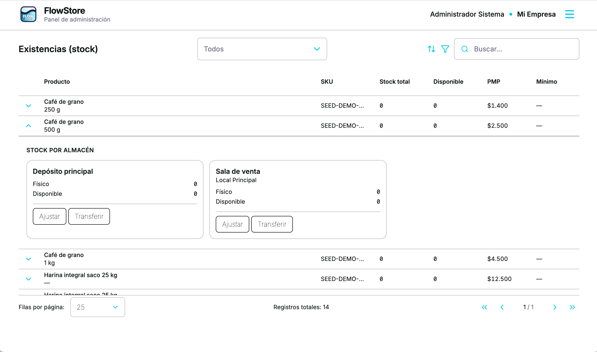
Unidades de medida
Administra las unidades de conteo, masa, longitud o volumen que usará el catálogo. El esquema distingue una unidad base por dimensión —por ejemplo la unidad suelta como referencia mínima de inventario— y unidades derivadas enlazadas a esa base mediante un factor de conversión. Así puede definirse, por ejemplo, que 1 caja = 12 unidades: en compras o en ventas se registra lo que ocurre en cajas, mientras existencias y reportes pueden homogeneizarse en la unidad base, sin mezclar cantidades que no son directamente sumables.
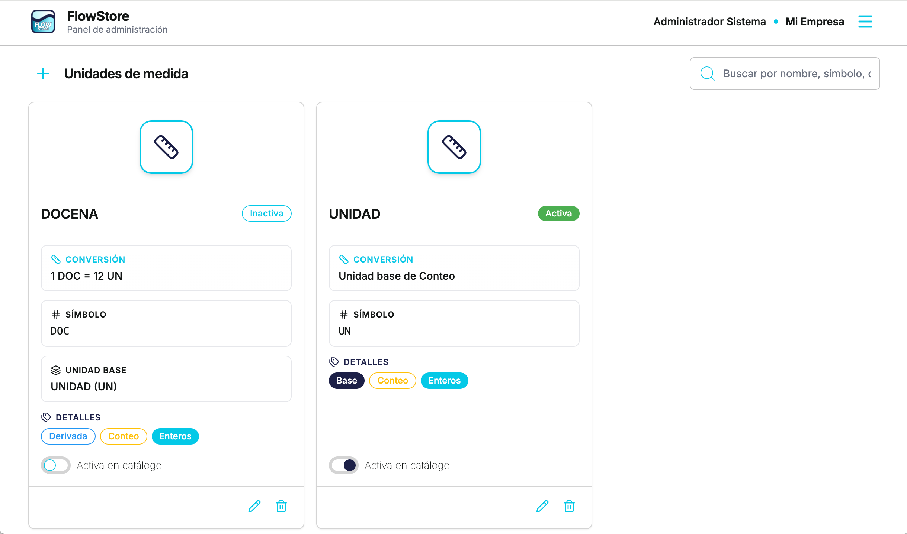
Atributos
Concentra las dimensiones reutilizables que alimentan las variantes —por ejemplo color, talla, material o contenido— definidas una sola vez para todo el catálogo. Al armar un producto con variantes, esas etiquetas permiten generar y mantener combinaciones sin duplicar el mismo concepto en cada ficha; POS, existencias y compras siempre referencian la misma variante concreta (SKU, barras y precio propios).
Ejemplo (inventario por talla). Un único producto comercial «Camiseta estampada» puede tener variantes M, L y XL: sin atributos ni variantes el stock sería un número agregado que no indicaría cuántas quedan de cada talla; con la combinación talla + variante el sistema muestra existencias por cada talla y permite vender o reponer sin confusiones en caja o bodega.
Ejemplo (mismo producto, distinto atributo y precio). «Coca-Cola» puede modelarse como un producto con variantes según un atributo de presentación (por ejemplo 1 L y 2 L): el nombre de familia es uno, pero cada volumen es una variante independiente con precio de venta y costo propios, coherente en listas de precios, ticket y reportes.
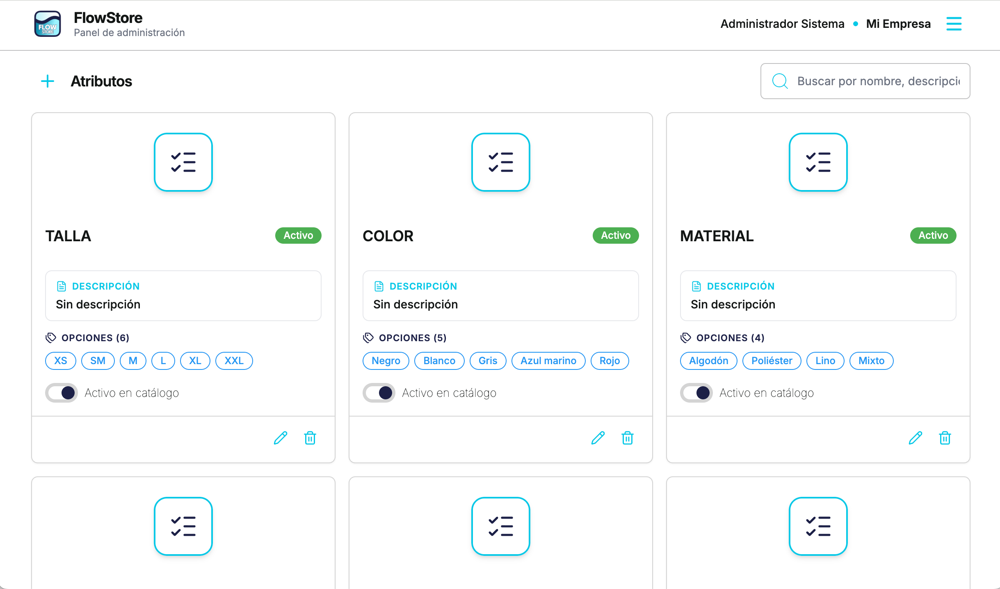
Almacenes
FlowStore utiliza un modelo de almacenes flexible y multibodega: cada ubicación tiene tipo (por ejemplo Almacén, Tienda, tránsito o cámara fría) y categoría (en sucursal, central o externa). Un almacén puede quedar sin sucursal asociada —típico de un depósito central o un sitio externo de acopio— y cumplir solo funciones de abastecimiento o transición; otro puede estar ligado a una sucursal concreta, con dirección o mapa alineados al local.
Ese esquema permite representar varios escenarios a la vez (sala, bodega trasera, centro de distribución, tránsito) y llevar existencias y transferencias con trazabilidad por ubicación. El tipo Tienda sirve para modelar la sala de venta frente a un Almacén de reserva en el mismo establecimiento; opcionalmente puede marcarse un almacén predeterminado para ordenar la política del negocio.
El punto de venta está asociado a una sucursal: la disponibilidad que ve el cajero corresponde al inventario consolidado en los almacenes vinculados a esa sucursal (donde normalmente se ubica lo vendible: sala y, según operación, también bodega del local). Las bodegas central o externa sin sucursal no entran en ese total de caja; su stock entra al circuito de venta cuando la operación registra recepciones o transferencias hacia el local. Así se separa bien el depósito corporativo de la disponibilidad del mostrador, manteniendo informes y stock alineados sin forzar un único almacén físico.
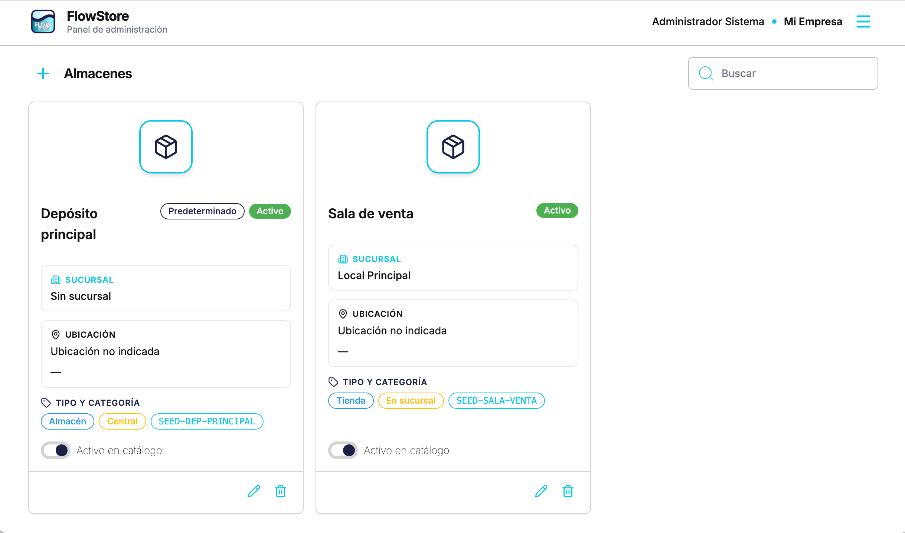
3.3.5 Tesorería
El módulo Tesorería es el área del panel donde FlowStore concentra el efectivo y los bancos, así como los gastos operativos clasificados: permite registrar cargos recurrentes u ocasionales, mantener una estructura de categorías de gasto alineada a la administración del negocio y administrar cuentas bancarias y cajas de efectivo con el detalle de movimientos que reflejan entradas, salidas y órdenes de pago. En conjunto completa la mirada financiera junto al POS y las compras, sin depender solo del resumen diario de caja.
Gastos operativos
Es la pantalla donde se registran y consultan los gastos del día a día: montos, fechas, proveedor o descripción y la categoría de gasto, que permite analizar el gasto por rubro en informes y decisiones. Mantiene trazabilidad de lo ejecutado fuera del flujo automático de ventas o documentos de compra cuando el negocio necesita anotar un costo directamente.

Categorías de gasto
Define el árbol o listado de clasificación que etiqueta cada gasto: servicios básicos, arriendo, marketing, transporte u otros criterios que la empresa utilice para contabilidad y control gerencial. Una categoría coherente evita cargar textos libres distintos para el mismo concepto y ordena los reportes posteriores.
Cuentas bancarias y cajas
Agrupa en un solo lugar del menú las cuentas bancarias (corrientes o vistas) y las cajas de efectivo ligadas a la operación, organizadas en pestañas separadas: en una se trabaja el mundo banco (saldos, abonos, cargos y transferencias registradas) y en la otra el mundo efectivo por caja o hub de tesorería, con su propio movimiento y contexto de sucursal o punto de venta cuando corresponde.
El valor del módulo es ver el recorrido del dinero entre esas cuentas, no solo el saldo aislado. Un esquema típico es: desde una cuenta bancaria se registra un retiro o giro que alimenta efectivo para la apertura de caja en el POS; durante el día los cobros y movimientos de sesión van dejando trazado el efectivo en la caja; al cierre de caja el sobrante puede concentrarse en una caja o depósito intermedio de tesorería y, al cierre de un período (por ejemplo semanal), volver a registrarse un depósito en cuenta corriente. Así el negocio entiende dónde está el dinero en cada etapa —banco, tránsito o mostrador— con el mismo criterio de trazabilidad que en ventas y compras, lo que apoya el control interno y las cuadraturas frente a extractos y arqueos reales.
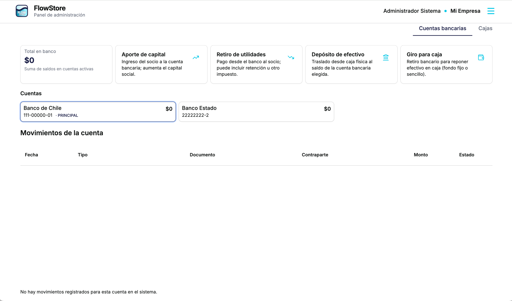
3.3.6 Contabilidad
El módulo Contabilidad enlaza lo que ocurre en ventas, compras y tesorería con la estructura formal del negocio: plan de cuentas, obligaciones pendientes de cobro y pago, libros consultables y criterios de impuestos coherentes con el catálogo y los documentos. FlowStore reduce la brecha entre operación diaria y gestión financiera al mantener una trazabilidad unificada: menos reconstrucción en planillas paralelas y una lectura ordenada para administración y asesores contables cuando revisan la misma información que usa el equipo comercial y de bodega.
Plan de cuentas
Es la columna vertebral sobre la que se apoyan asientos y reportes: la estructura de cuentas permite clasificar cada movimiento con criterios estables para balances y auditoría. En FlowStore el plan es personalizable y configurable según lo que cada empresa necesite —niveles de detalle, agrupaciones y convenciones propias—, lo que aporta una ventaja comparativa frente a esquemas rígidos: la organización puede modelar la estructura contable con libertad, ordenarla de forma inteligente para su propia forma de llevar cuentas y mantener coherencia con los informes, sin quedar atrapada en un plan ajeno — el típico esquema “impuesto” que no corresponde a cómo trabaja día a día un emprendimiento ni a lo que la realidad operativa necesita ver reflejado en los números.
Reglas contables
Define cómo las operaciones del sistema impactan las cuentas: qué combinación de cargos y abonos resulta de una venta, una compra, un gasto u otros procesos parametrizados. La ventaja inmediata es la repetibilidad: reglas claras reducen diferencias inexplicadas entre períodos cuando el equipo registra mucho volumen.
Las reglas son flexibles: pueden armarse según las necesidades y política de cada empresa, e incorporarse, modificarse o eliminarse en cualquier momento si cambian los intereses o la estrategia contable —sin quedar atadas a un guion fijo desde el primer día. Mantener esas reglas al día alinea libro y operación cuando el negocio incorpora nuevos flujos o reordena prioridades.
Cuentas por cobrar
Concentra el detalle documentado pendiente de cobro por parte de los clientes: saldos abiertos, origen del crédito y seguimiento alineado con lo facturado o emitido desde la operación. Facilita priorizar cobros y responder con datos concretos ante consultas sin depender solo del resumen diario del POS.
Cuentas por pagar
Este módulo muestra, con lenguaje claro, qué se le debe a quién y cuándo conviene pagar: facturas y compromisos ligados a compras o servicios que aún no salieron de caja, ordenados para que administración y tesorería actúen sin sorpresas. La ventaja es comercial y financiera a la vez — se evita perder descuentos por pronto pago, se preserva la relación con proveedores al cumplir fechas conocidas de antemano y se ve de un solo vistazo cómo viene la carga de egresos respecto del flujo esperado del negocio.
Para planificar mejor, FlowStore también ofrece visualización en modo calendario: los vencimientos y compromisos adquiridos aparecen sobre una línea de tiempo que facilita reorganizar prioridades de pago —por ejemplo agrupar salidas en ventanas donde haya mayor liquidez— y conversar internamente con cifras compartidas, sin depender de recordatorios sueltos o planillas paralelas al sistema.
Libros contables
Reúne las consultas habituales del contador y de administración en secciones diferenciadas, en particular el libro diario —el registro cronológico de asientos— y el libro mayor —el detalle por cuenta y período— para reconstruir movimientos período a período cuando se preparan declaraciones, se responde fiscalización o revisión externa o se audita la coherencia entre operación y contabilidad. Así se apoya en la misma base que alimenta cobros, pagos y el resto del circuito operativo, sin duplicar registros en hojas paralelas.
Impuestos
Administra tasas y definiciones tributarias utilizadas por el catálogo, las líneas de documento y el cálculo consistente entre administración y punto de venta. Mantenerlos actualizados y alineados con la política del negocio evita que el precio cotizado discrepe del asiento implícito tras el cobro o la compra registrada.
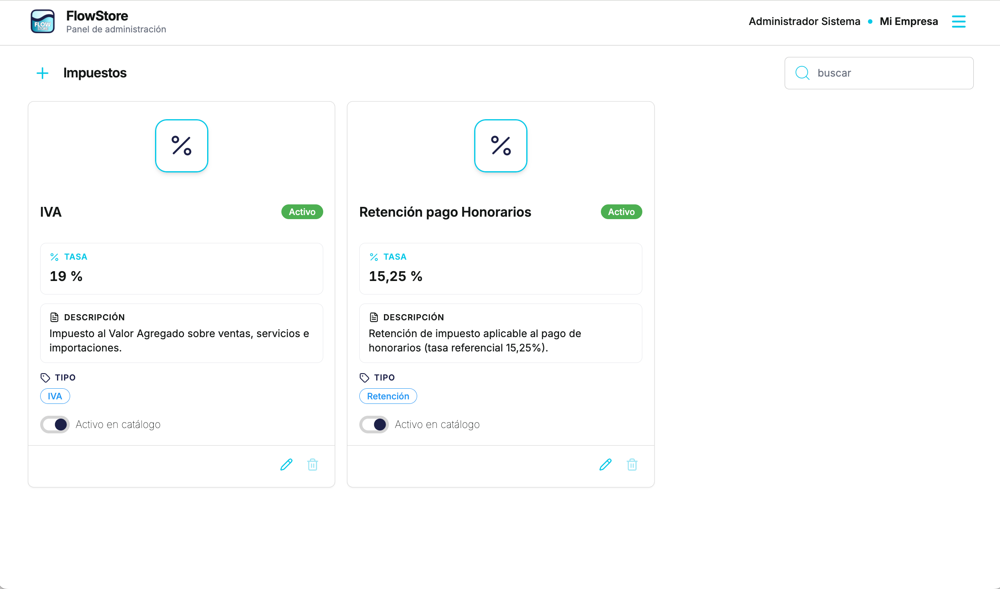
Estados financieros
Reúne los informes y vistas financieras que permiten leer el negocio por arriba —por ejemplo estado de resultados, balance y otros derivados— como capa gerencial construida sobre el mismo plan de cuentas y los movimientos que ya provienen de ventas, compras y tesorería. La ventaja es traducir la operación en una síntesis ejecutiva: se gana velocidad para decisiones (rentabilidad, apalancamiento, desempeño por período).
3.3.7 RRHH
El módulo RRHH es el área del panel donde FlowStore concentra lo relativo a las personas que trabajan en el negocio: fichas de empleados, estructura organizativa y el circuito de remuneraciones para procesar y revisar haberes por período. Complementa ventas, tesorería y contabilidad al dejar identificada la base humana detrás de la empresa y de los cargos que impactan costos —con una información ordenada para administración sin depender de fichas sueltas fuera del sistema.
Empleados
Permite crear y mantener el registro del personal: datos laborales, vínculos con la organización y el contexto operativo necesario cuando el equipo atiende locales o participa en procesos internos registrados en FlowStore. La vista de detalle del empleado concentra en un solo lugar la información relacionada con esa persona, de modo que quien consulte no debe saltar entre pantallas dispersas para armar una ficha completa. Actúa así como fuente única de datos del personal para asignaciones, reportes y el resto del flujo de RRHH en la aplicación.
Remuneraciones
Aquí se arma en esencia el pago por período: la liquidación de remuneraciones incorpora haberes y descuentos configurables por concepto —entre los haberes pueden figurar, por ejemplo, sueldo o remuneración ordinaria, horas extraordinarias, bonos, gratificaciones, viáticos o comisiones; entre los descuentos suelen aparecer cotizaciones previsionales (AFP, salud, seguro de cesantía), retenciones por impuesto a la renta, cuotas por préstamos o anticipos, junto con otros ítems que cada empresa necesite cargar sin redactar desde cero cada línea de liquidación período tras período. Así es posible integrar el neto a pagar con el detalle transparente que después debe cuadrar con tesorería.
Una vez cerrado el período queda constancia para consultar historial, apoyar cumplimiento ante el trabajador y responder con rapidez ante una auditoría revisando el mismo mes que ya quedó registrado en operación y en nómina dentro de FlowStore —menos reprocesos y menos desalineación entre “lo pagado” y “lo liquidado”.
Unidades organizativas
Son los bloques o equipos en los que se divide la empresa para saber quién pertenece a qué área: por ejemplo «Ventas en tienda», «Bodega» y «Administración», o tres sucursales con nombre propio bajo la misma razón social. Cada empleado puede quedar asignado a una unidad; así los reportes separan, por ejemplo, lo que pasa en ventas de lo que pasa en bodega sin mezclar cantidad de personal ni costos entre áreas distintas.
3.3.8 Configuración
El módulo Configuración concentra los datos base que sostienen el resto del sistema: la información de la empresa, las sucursales desde donde se opera y los usuarios que acceden al panel y al POS. Al mantener estas definiciones en un solo lugar, FlowStore asegura que documentos, permisos, inventario y tesorería trabajen sobre una misma referencia y evita inconsistencias entre lo que se vende, lo que se registra y quién puede hacerlo.
Empresa
Centraliza la ficha de la empresa (identificación y datos de trabajo) utilizada en el panel y en los documentos que el negocio emite o registra. Además, en esta misma sección se administra información que se utiliza en otras áreas del producto: la definición de socios (para dejar la estructura societaria registrada) y las cuentas bancarias de la empresa, que luego se utilizan en tesorería para ordenar el flujo del dinero. La ventaja es que los datos quedan estandarizados y se reutilizan en todo el flujo de la empresa.
Sucursales
Permite definir los locales o sedes desde los que opera la empresa. Esa estructura es clave para ordenar la operación: conecta el punto de venta con su contexto, separa lecturas por local y alinea inventario y tesorería con la realidad física del negocio.
Usuarios
Gestiona las cuentas de acceso y los perfiles de permisos necesarios para operar: quién puede administrar catálogo, quién puede ver tesorería, y quién puede atender en caja desde el POS. Con roles claros se protege la operación y se reduce el riesgo de errores por accesos indebidos, manteniendo trazabilidad por usuario en los procesos.
3.4 App POS — punto de venta
La app POS (punto de venta) de FlowStore está diseñada para el mostrador y para la velocidad del día a día: buscar productos o variantes en segundos, armar el carrito, cobrar y seguir atendiendo sin fricción. Su interfaz es minimalista y muy simple de usar, pensada para que un cajero aprenda rápido y cometa menos errores bajo presión; al mismo tiempo es potente, porque trabaja conectada al catálogo, precios, clientes y stock del sistema, manteniendo trazabilidad con la sesión de caja y con lo que ocurre en administración.
Diseño de la interfaz (UI) y flujo de trabajo
A diferencia de un panel administrativo con menús laterales y secciones profundas, el POS está construido para operar en una sola pantalla: no depende de una barra lateral ni de un menú desplegable para vender. Esta decisión de diseño lo hace ideal para pantallas touch y equipos de atención como tablet o smartphone, manteniendo un flujo minimalista orientado a pasos rápidos y repetibles.
En la vista principal conviven dos áreas que el cajero usa todo el tiempo: el buscador de productos y el carrito. El buscador permite encontrar productos por nombre, SKU o código de barras, lo que habilita trabajar con pistola o escáner cuando el local lo requiere; además, el contexto de búsqueda se alinea con la lista de precios activa del punto de venta, de modo que el cajero siempre trabaja con los valores correctos para ese local. El carrito muestra de forma simple e intuitiva el detalle de la compra (ítems, cantidades y totales) y permite ajustar la venta antes de cobrar sin perder el ritmo de atención.
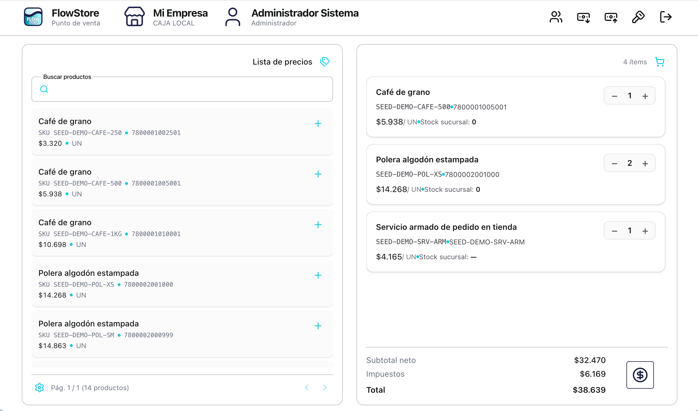
La barra superior reúne accesos rápidos a funciones de operación: Clientes (registrar nuevos, consultar detalle e historial de compras), revisión de deudas y pagos cuando el negocio trabaja con crédito interno, además de atajos para ingreso de efectivo (por ejemplo para hacer cambio cuando falta sencillo), egreso de efectivo (retiros antes del cierre) y el cierre de caja con su arqueo. La lógica es que lo recurrente esté siempre a un toque, sin navegar por múltiples pantallas.
El proceso de cobro soporta múltiples medios de pago y pago mixto en una misma transacción: por ejemplo una parte en efectivo y el resto con tarjeta de débito, u otras combinaciones según la operación. FlowStore calcula automáticamente el vuelto, permite asociar la venta a un cliente y, si se usa crédito interno, valida en el momento si el cliente tiene crédito autorizado y si la compra respeta su cupo, evitando ventas a crédito fuera de política por descuido en caja.
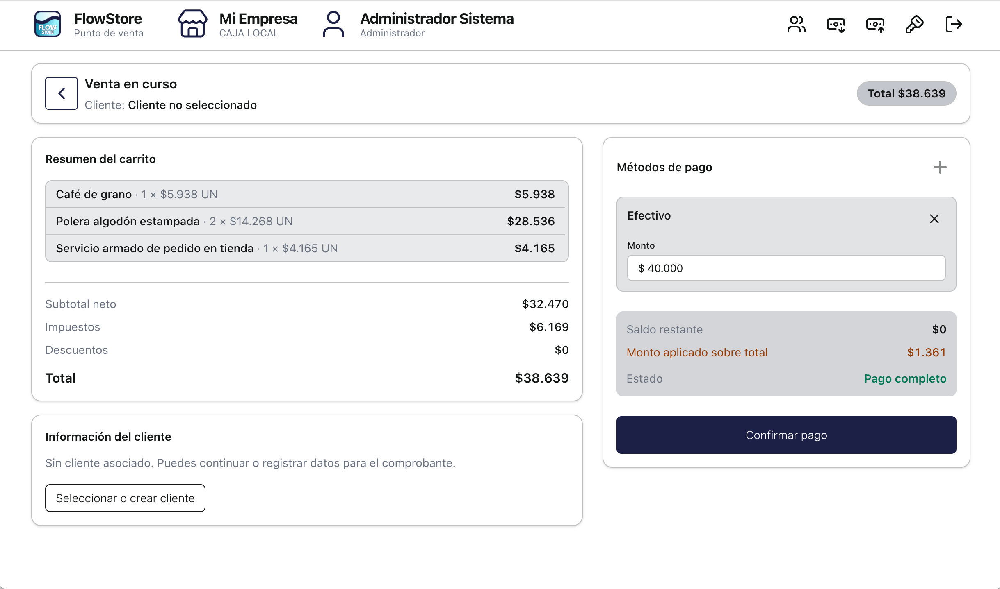
Flujo de venta resumido (paso a paso)
- Inicio de sesión: el operador ingresa sus credenciales; el sistema valida usuario y contraseña y confirma que su perfil tiene permisos para operar en la app POS.
- Configurar sesión de caja: se selecciona la sucursal y el punto de venta habilitados para operar, y se registra el monto de apertura. Al confirmar queda abierta la sesión y definido el contexto de trabajo (local y listas de precios asociadas a ese punto de venta). Un mismo punto de venta no permite abrir una nueva sesión mientras exista una sesión de caja abierta: primero debe cerrarse la anterior.
- Venta en mostrador: buscar productos o variantes, armar el carrito, ajustar cantidades y revisar el resumen antes de cobrar.
- Cobro: elegir medios de pago, validar montos y confirmar; al terminar se vuelve al espacio de venta para iniciar una nueva operación. La venta genera el ticket y se imprime en la impresora configurada para el punto de venta, según el flujo del local.
3.5 Funcionalidad de FlowStore vs. alternativas del mercado
En el capítulo de mercado se observa que el ecosistema chileno mezcla soluciones con promesas parecidas pero con alcances distintos: desde terminales y servicios de cobro con software ligero, hasta plataformas de emisión tributaria por tramos, ofertas modulares que se arman “por piezas”, sistemas de retail complejo y alternativas tipo ERP integrado. La diferencia práctica no es solo el precio, sino qué tan lejos llega la trazabilidad entre vender, comprar, manejar stock y entender el dinero.
Lo que FlowStore resuelve de forma integrada
FlowStore se posiciona como una solución donde el POS no es una aplicación aislada: el cobro en mostrador trabaja sobre el mismo catálogo (variantes, atributos, unidades y listas de precios), actualiza stock por almacén y deja trazabilidad hacia administración. En paralelo, el panel reúne ventas, compras, inventario, tesorería y contabilidad operativa en una sola base, lo que reduce el “doble registro” típico (caja en un sistema, stock en otro, y finanzas en una planilla).
Comparación por familias funcionales del mercado
1) Smart POS / adquirentes. Son muy buenos para el cobro y suelen resolver el “salir a vender” rápido, pero su administración suele ser más ligera. FlowStore apunta a que el negocio no solo cobre, sino que mantenga catálogo, precios, clientes y stock con coherencia y control desde el mismo flujo.
2) Modelos modulares. Permiten partir barato y sumar piezas, pero en la práctica la operación tiende a exigir el “set completo” (stock, devoluciones, pagos, etc.). FlowStore propone una experiencia más coherente: el POS y el panel ya están diseñados para trabajar juntos, con un flujo estándar que evita inconsistencias entre módulos.
3) Retail complejo u omnicanal. En ese mundo el valor está en reglas avanzadas y múltiples canales. FlowStore se enfoca en el circuito físico del negocio (mostrador, stock, compras, caja/banco y lectura financiera), con una interfaz POS minimalista que no sacrifica control.
4) ERP integrado. Cuando la empresa necesita que contabilidad y tesorería no sean un “post proceso”, sino una lectura ligada a lo que ocurre en caja y en compras, FlowStore aporta módulos que sostienen esa continuidad: cuentas por cobrar/pagar, libros (diario y mayor), impuestos y estados financieros a partir de una base de operación.
Ventajas funcionales que destacan en la operación
- Un solo registro operativo: ventas, compras, inventario y dinero quedan conectados; se reduce el trabajo de reconciliar sistemas distintos y planillas.
- POS simple pero potente: interfaz touch-first, búsqueda por nombre/SKU/barras, pago mixto y control por sesión de caja, con rapidez real para operador del punto de venta.
- Inventario “de verdad”: variantes por atributos, unidades con conversión, stock multibodega y acciones de ajuste/transferencia para cuadrar con inventarios físicos.
- Control de caja y bancos: tesorería permite entender dónde está el dinero y cómo se mueve entre banco y efectivo, conectando cobros y pagos.
- Escalabilidad por complejidad: cuando el negocio crece (más productos, más bodegas, crédito interno, más reportes), la estructura ya está en FlowStore y no requiere rearmar procesos desde cero.
En síntesis, desde el punto de vista de la funcionalidad, mientras varias alternativas del mercado optimizan solo una parte del problema (cobro, emisión o inventario), FlowStore destaca por su continuidad de punta a punta: el mismo sistema que cobra es el que ordena catálogo, stock y lectura financiera, con una experiencia POS diseñada para ser rápida y amigable para el equipo de caja.